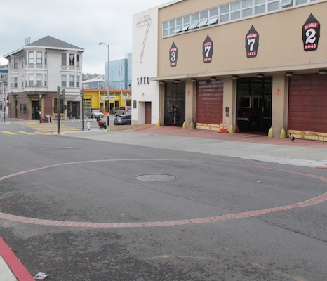

The original cisterns, about 35 or so, were built in the 1850s, after a series of great fires ravaged the city, located in the Telegraph Hill to Rincon Hill area. In the next several decades they were largely unused, but the fire department filled them up with water for a “just in case” scenario.
